We stayed at the Aarathy Hotel in Madurai. It overlooks the Kudalagar Temple and has a busy open-air restaurant that is especially popular when Mahalakshmi, the Temple elephant, is led through each morning and evening.. !
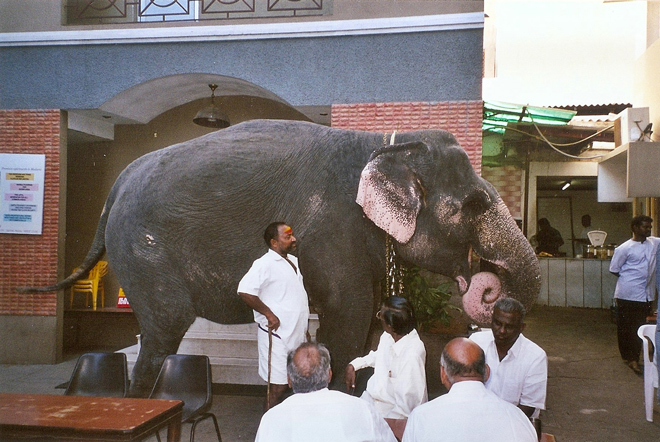
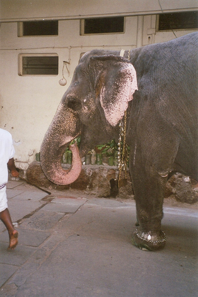
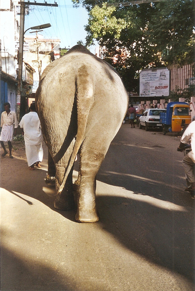
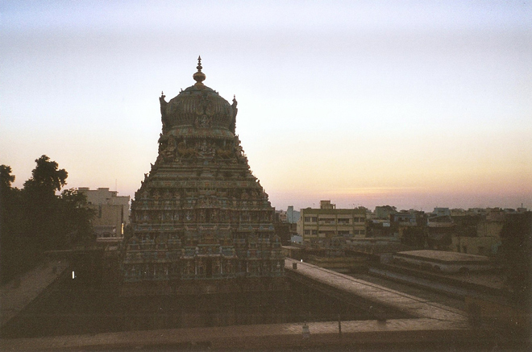
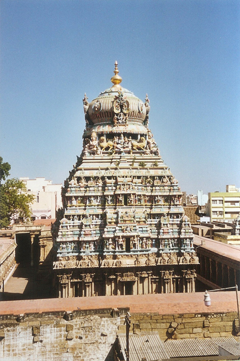
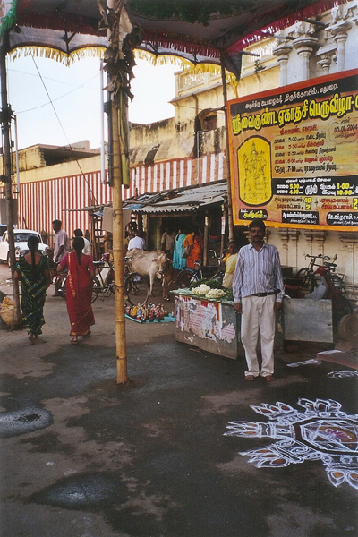
The Tirumalai Nayak Palace was built in 1636 and is about 1.5km from the Sri Meenakshi Temple. It was partly demolished by Tirumalai's grandson who wanted much of the fine structure (and associated jewels and woodcarvings) for his own palace at Trichy (but his dream was never realised). Today only the entrance gate, main hall and dance hall remain. Massive stone pillars support elegant cornices that give the roof of the palace a height of 20m. There is a daily sound-and-light show in English and Tamil when a few coloured lights are turned on and off and an audio cassette played at maximum volume. The text, interspersed with Tamil songs, is like Monty Python meets Shakespeare. Tickets are Rs 2 to 5 depending on whether you want a metal or plastic chair.. !
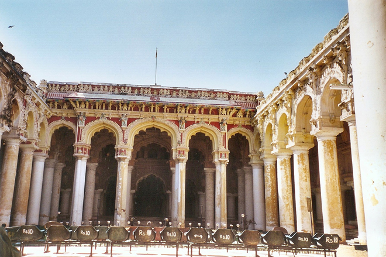
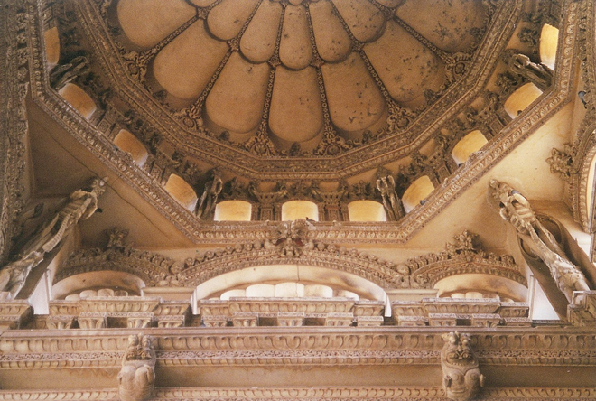
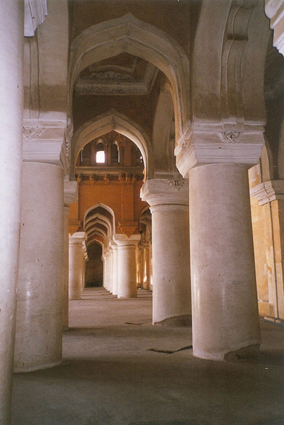
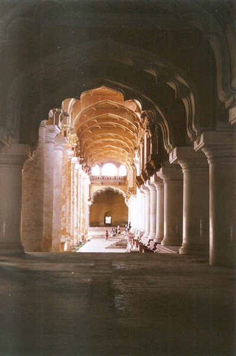
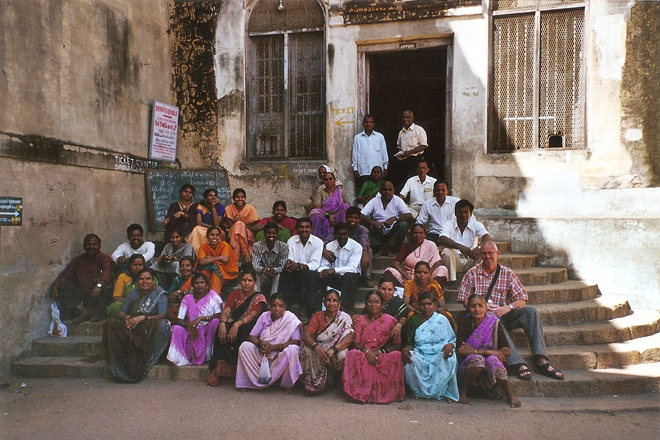
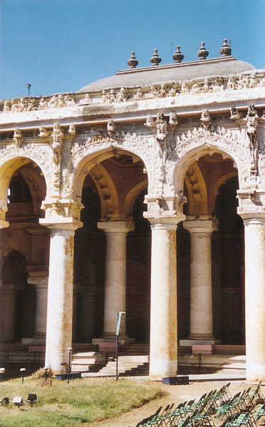
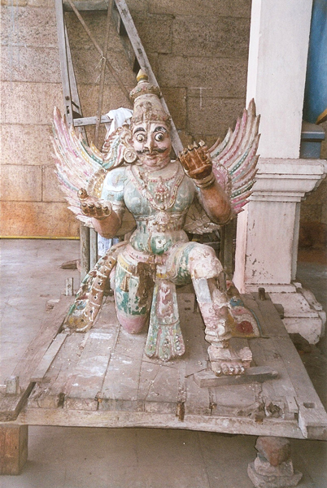
All that remains of the Rangavilasa (the palace where Tirumalai's brother Muthialu once lived) are ten pillars, wedged in a tiny back street appropriately named Ten Pillar South Lane. One pillar contains a shivalingam, worshipped by passers-by.
We then continued on to the Flower and Textile Markets where we met some very friendly workers and I also had my hair-cut: the whole street came to watch .... !
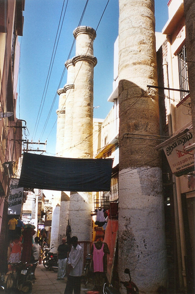
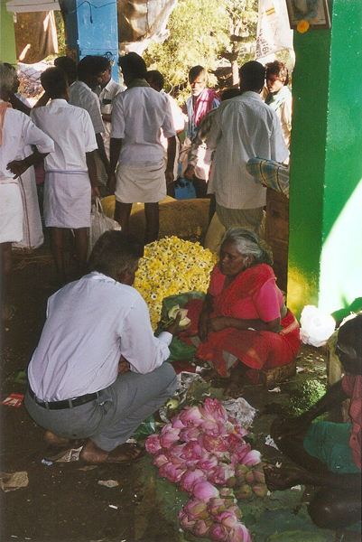
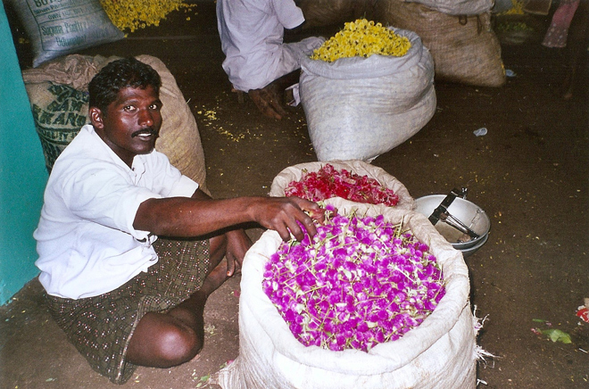
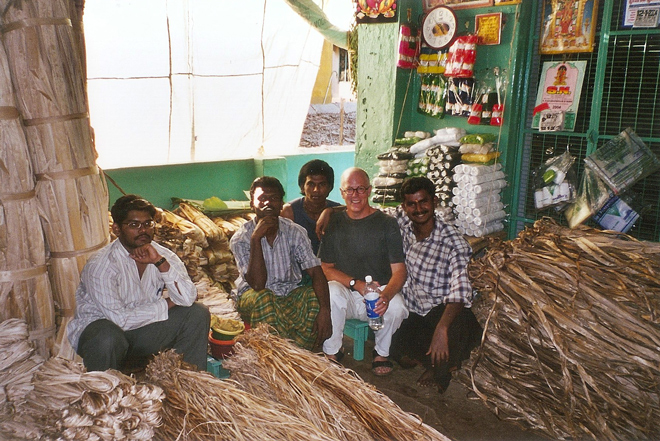
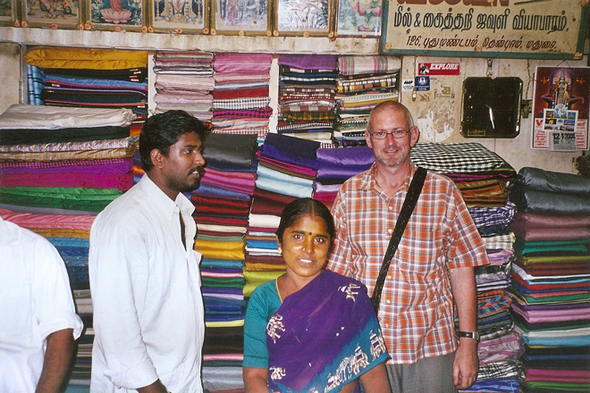
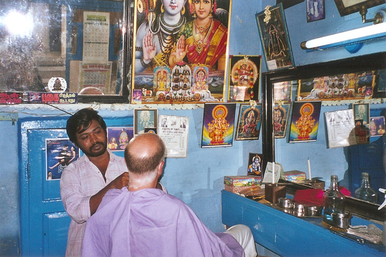
Street life in India is manic: noisy bustling tuk-tuks plying for trade, sacred cows foraging through discarded rubbish (broken neon tubes and other trash) for something to eat and people who extraordinarily make a living from collecting carbon paper (one of the lasting hang-overs from Imperial rule). If you get up early enough (about 5am) the overnight street sweepers have cleared everything away, but by breakfast time, the streets are filthy once again .... !
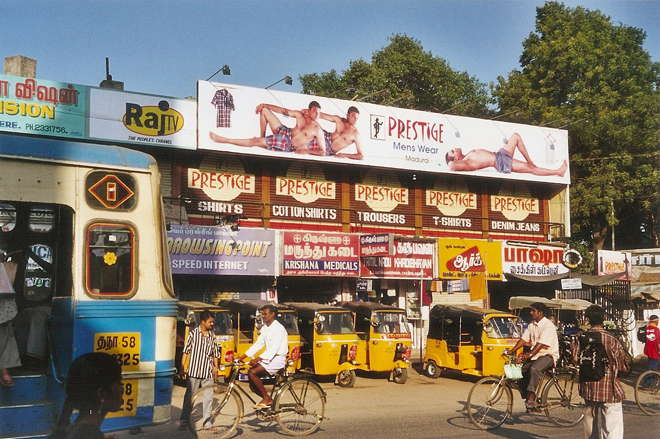
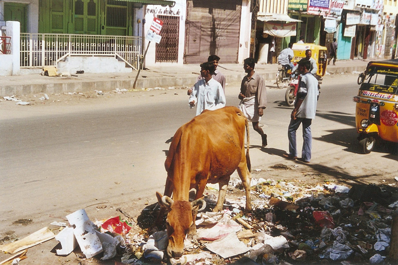
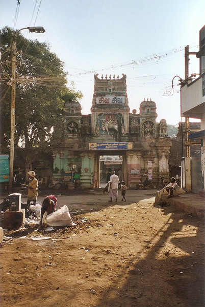
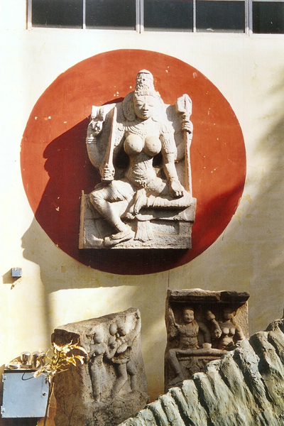
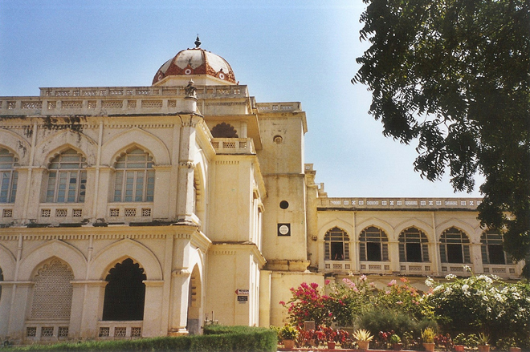